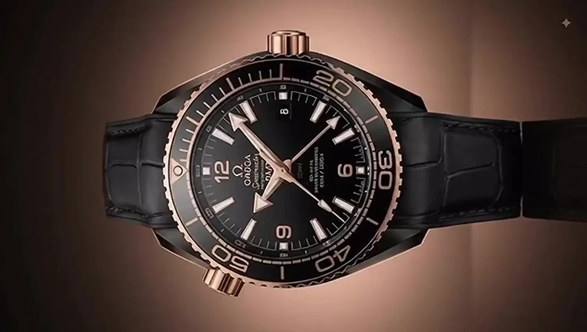
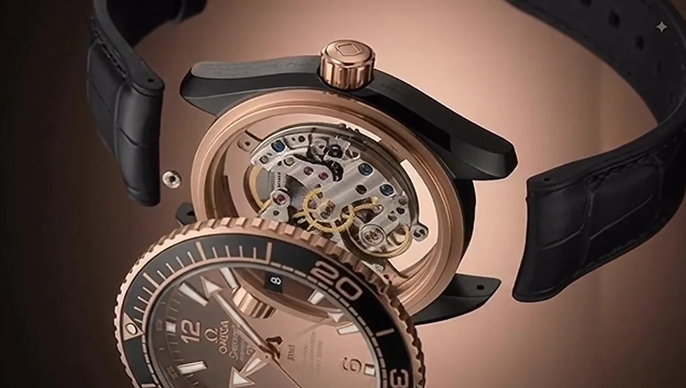

OMEGA / SEAMASTER
Depth, in
its finest form.
A modern icon shaped by the sea. Discover a singular study in precision, presence and refined materials.
Explore the movement ↘
01 / 242
Scroll to explore
01 / The heart of the watch
Precision,
revealed.
Follow the sequence back through the craft. A closer look at the architecture within, brought together with the assurance and composure of a true instrument.
01Mechanical heart
02Purposeful detail
03Ocean spirit

Inside the Seamaster02 / Made to be remembered
A world of its own.
Black ceramic. Warm metal. The quiet confidence of a watch that belongs wherever the next horizon leads.
Return to the beginning ↑